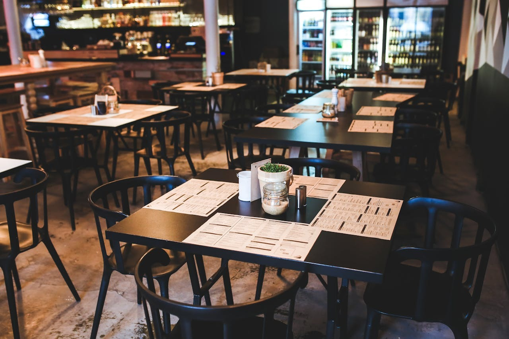

Lezzet Bahçesi Restoran
Şehirden uzak, yemyeşil bir bahçede yer alan Lezzet Bahçesi Restoran, doğal ve taze lezzetleriyle misafirlerini ağırlıyor. Restoran, Türk mutfağının geleneksel tariflerini modern dokunuşlarla yeniden yorumluyor. Taş fırından çıkan sıcacık pideler, organik malzemelerle hazırlanan salatalar ve odun ateşinde pişen et yemekleri menünün favorileri arasında. Açık ve kapalı oturma alanları bulunan mekan, huzurlu atmosferi ile hem aile yemekleri hem de özel organizasyonlar için ideal.
Rezerve Et
Deniz Tadında Balık Evi
Deniz kenarında, dalga sesleri eşliğinde yemek keyfi sunan Deniz Tadında Balık Evi, taze deniz ürünleriyle ünlüdür. Günlük olarak yerel balıkçılardan temin edilen mezgit, levrek ve karides gibi seçeneklerin yanı sıra zengin meze çeşitleri de sunar. Izgara balıklar ve özel soslu deniz mahsulleri makarnası en çok tercih edilen lezzetlerdir. Rahat bir dekorasyona sahip restoran, samimi atmosferiyle hem romantik yemekler hem de arkadaş grupları için uygun bir ortam yaratır.
Rezerve Et

Fırında Restorant
Mis gibi kokan odun ateşi fırınında hazırlanan tandır, lahmacun ve güveç yemekleri, mekânın en beğenilen seçenekleri arasında. Restoran, otantik dekorasyonu ve sıcak ortamıyla misafirlerini adeta geçmişe götürür. Kahvaltıdan akşam yemeğine kadar hizmet veren mekânda, ev yapımı tatlılar ve doğal içecekler de bulunuyor. Aile sıcaklığında bir yemek deneyimi arıyorsanız, Taş Fırın Sofrası tam size göre!
Rezerve Et